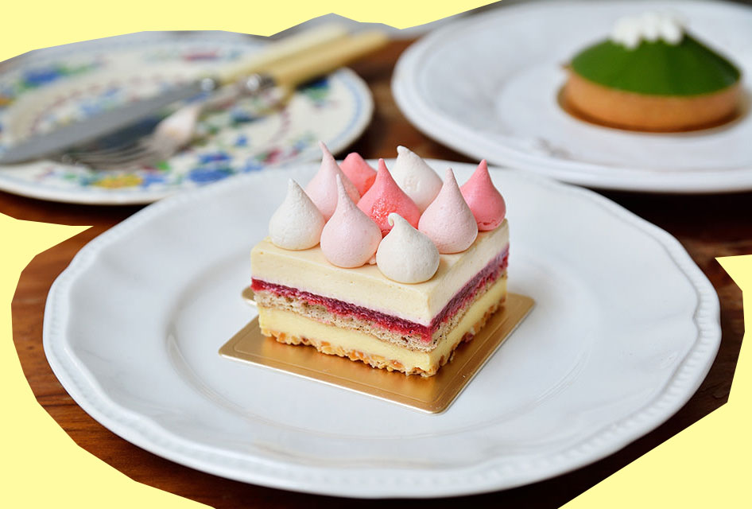

Merci cafe'
Address / No. 17, Ln. 7, Xinmin St., Banqiao Dist., New Taipei City
Open from 9:00 to 21:00.
Merci cafe is located in an old house, an aroma of vintage hung about the place. The smell of coffee filled the shop, as long as you walked in, you will love the atmosphere here. Not to mention how flavorful the desserts are with all the delicious herbs and ingredients in them.
Location
